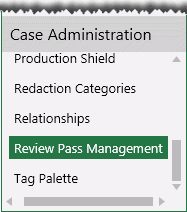

In Eclipse, the review process for your case documents is managed through two mechanisms:
Review Passes allow you to manage the review. For example, an initial review pass may be used to identify and tag all documents that are totally irrelevant to the case, such as spam email. Review passes are created and managed on a case-by-case basis in the Eclipse Web environment.
Individual batches are assigned to individual reviewers. They allow you to efficiently divide the work, assign it to the correct individuals, and monitor progress. Individual batches are created as part of Review Pass creation.

This page contains the following content:
Related pages:
By default, documents in a review pass are separated into batches in numerical order by image key (BEGDOC field). If you define a batch size of 100 documents, the first batch will contain the first 100 documents in the review pass, in order by image key.
The options described in the following paragraphs allow other methods of organization.
When a review pass is defined with the Batch by Category option, documents are grouped by a selected “category.”
For example, you might group documents based on a DocType field, in which case all like documents (.MSG, .DOC, .XLS, etc.) will be grouped into batches based on batch size.
Categories can be any of the following:
Category definitions of a specific field: group documents into batches according to a specific field’s category definition. See Field Options in Step 3: Define Database Fields for details on field categories.
Analytic Categories: If Eclipse Analytics has been installed and configured at your site, documents can be batched by:
Analytics Categories
Analytics Clusters
See
Fields can be defined with the Allow Group By option set to Yes. By default, the BEGATTACH and MD5HASH fields are defined with this option.
When such fields exist, they can be selected as the Family Field during batch creation. The Family Field option ensures that all family documents are kept together in batches.
Typical uses include:
BEGATTACH: Keep a document and all of its attachments together.
MD5HASH: Keep a document and all duplicates together.
Field indicating email threading: Keep all documents in a specific email thread together.
When a family field is defined, Eclipse groups documents into batches sequentially by image key plus all family documents associated with the documents encountered as the batches are created. Thus batch sizes may vary quite a bit.
In addition to grouping by category and/or including family documents, documents can be sorted for batching by the content of up to three fields (Batching Order 1, 2, and 3). In this case, documents in the review pass are sorted by the selected field(s) and then organized into batches.
For example, you might sort by a date field, in which case, documents in the review pass will be sorted by date and batches created starting with the earliest date.
If you group documents by a category and also sort by date, batches will be based on the category field and organized secondarily by date.
If you want to include family documents and sort by a particular field, family documents must share the same sort-field value as their “parent” document. Otherwise, sorting will take precedence and family documents will not be kept together with their parent in a batch.
For example, if you include family documents and also sort by a date field, if document ABC-0001 has a date of 01/01/2014, then for its family documents to be included in its batch, all family documents must also have a date of 01/01/2014. If family documents do not all have the same date, then all documents will be organized into batches based on the date field.
Before creating a review pass, fundamental Eclipse configuration must be completed (managing client, case, users and user groups).
All members of the Super Admin group can manage review passes and batches. Others who have the Create and Manage Batches permission can also perform these tasks.
As with other administration activities, planning will help ensure the best outcome. The following steps will help you efficiently create review passes:
Identify the managing client and case for which review passes are being defined.
Determine the purpose and scope of each review pass. For example:
Is this an initial pass to identify irrelevant or illegible documents, or a more specific pass, such as to identify and tag all privileged information?
Which documents should be included? (For example, a review pass might be based on a specific field category value.)
This information will allow you to identify and save the search to be used for the review pass. See Eclipse Web End User for details on searching.
Give some consideration to naming conventions for review passes so that names are meaningful and consistent.
Identify the user group(s) who will work on each review pass.
Decide whether or not documents should be grouped by category and/or a family field as discussed in How Documents are Organized into Batches.
Optional: At any time, you can add instructions for the review in a separate file and add it to the case as explained in Add Case Instructions, Documents, and Alerts.
Continue with Review Pass Basics.